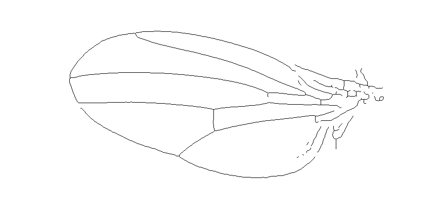
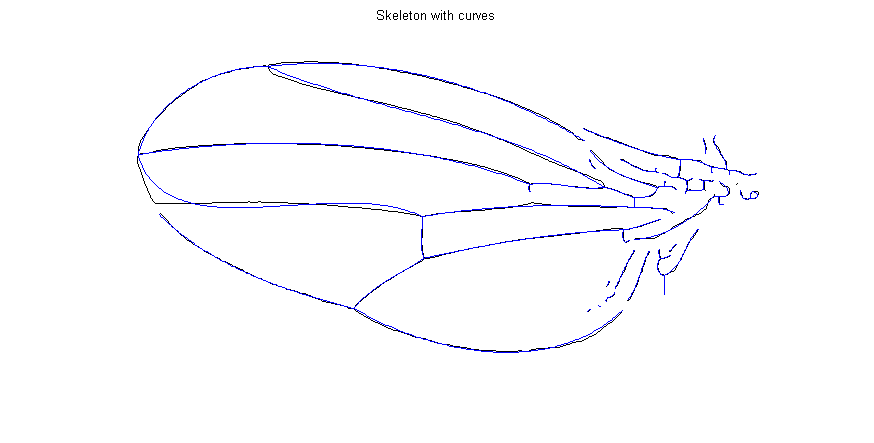
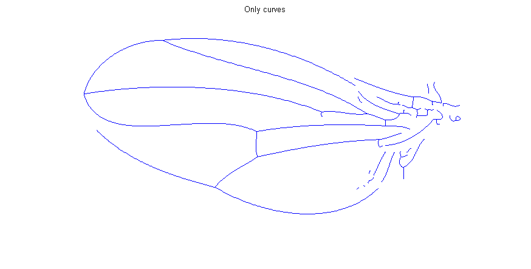

Contents
function fitCurvesWingSkeleton(varargin)
%FITCURVESWINGSKELETON Fit a set of polynomial curves to a segmented wing % % Usage: % fitCurvesWingSkeleton % % % See also % % ------ % Author: David Legland % e-mail: david.legland@grignon.inra.fr % Created: 2011-04-04, using Matlab 7.9.0.529 (R2009b) % Copyright 2011 INRA - Cepia Software Platform.
Initialisations
% the degree of polynomial curves to work with deg = 3; % read the binary segmented image (should be a skeleton, one-pixel width) img = imread('skeleton.tif'); imshow(img == 0);
Curves fitting
% Compute coefficient of fitted curves allCoeffs = polynomialCurveSetFit(img, deg); % Displaty segmented image with curves figure; imshow(img == 0); hold on; % affiche les courbes en sur-impression for i = 1:length(allCoeffs) hc = drawPolynomialCurve([0 1], allCoeffs{i}); set(hc, 'linewidth', 1); end title('Skeleton with curves');
Display only curves
% Display an empty image figure; imshow(ones(size(img))); hold on; % Overlay individual curves for i = 1:length(allCoeffs) hc = drawPolynomialCurve([0 1], allCoeffs{i}); set(hc, 'linewidth', 1); end title('Only curves');